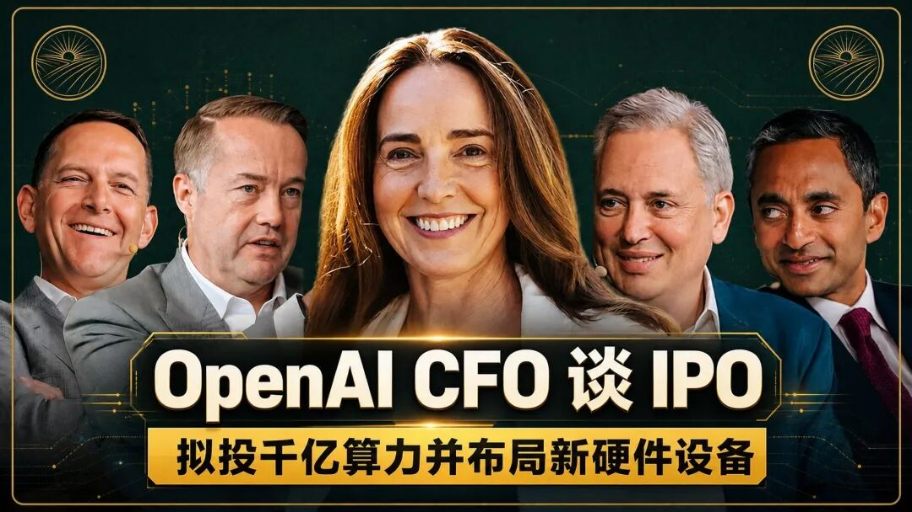

Web3SkyCity.AI
首席财务官OpenAI 的IPO：Sarah Friar 揭秘 AI 时代的终局之战
城主说| 老对手Anthropic已经递交了上市申请， OpenAI的IPO也近在眼前，在科技史上，很少有公司的融资规模能以“千亿”为单位。 最近两天，OpenAI 首席财务官 Sarah Friar 出现在ALLin现场访谈，她面对的是一个充满变数的行业图景：英伟达算力的饥渴、竞争对手 Anthropic 的步步紧逼，以及市场对 AI 商业化路径的质疑。这位曾掌舵 Nextdoor 并深度参与 Square 上市的资深高管，展现出了超越传统财务视角的战略视野。在她看来，OpenAI 正在进行的不仅是一场关于资金的博弈，更是一场关于如何定义人类未来“智能基础设施”的远征。

目录
全局摘要和核心观点
巨额融资与上市观：IPO 只是里程碑
竞争格局：基础设施层与复合型优势
消费级与企业级的平衡：AGI 的使命
算力供应与 1GW 数据中心：供应链的信任博弈
算力远景：2026年后的稀缺与多模态转向
交互的范式转移：赋予设备“人文气息”
资本配置与经济模型：从 4 到 4o 的成本通缩
需求预测与智能体时代：每月 2000 美元的博弈
算力战略与多维魔方：从云到定制化构建
产业融合：紧贴客户价值与“直觉”模型
终局博弈：广告的可能性与公用事业愿景
全局摘要
本次最新访谈中，OpenAI 的 CFO Sarah Friar 详细探讨了公司史上规模空前的融资背景、未来的上市态度以及核心竞争战略。她强调 OpenAI 的目标是构建全球性的 AI 基础设施层，通过对算力、能源和社区的超前布局，应对未来的计算稀缺。同时，讨论还涉及了与 Anthropic 的竞争关系、多模态时代的交互变革以及基于“记忆与直觉”的资本配置模型。
核心观点
IPO 仅是融资手段 and 里程碑，而非终点，当前核心是利用融资保持最大的灵活性。 OpenAI 的战略是构建单一基础模型驱动的智能层，通过 ChatGPT、Codex 和企业服务等多个接口产生复合型优势。 算力是极其稀缺的资源，瓶颈已从芯片延伸至能源、土地、供应链和顶尖人才。 未来 AI 的竞争在于“外壳（harness）”，即通过记忆、语境和直觉与客户建立深度连接。 广告模式虽在考虑中，但将坚持不干扰模型最佳结果的原则，利用高意图用户数据创造价值。
IPO 仅是里程碑：用 1200 亿美元构建最大的灵活性
当市场都在猜测 OpenAI 何时会效仿 SpaceX 进行公开募股时，Sarah Friar 对 IPO 的态度显得异常冷静。她认为，在当前的 AI 竞速中，资金的规模直接决定了战略的冗余度。“归根结底，IPO 只是一个里程碑，它并不是终点。经营公司时不要将其视为某种终极目的地。这仅仅是另一种融资方式而已。”她透露，OpenAI 筹集的资金规模已经超过了 1200 亿美元，这种规模不仅在私募市场史无前例，甚至让沙特阿美（Saudi Aramco）当年的 IPO 纪录也显得黯然失色。
作为 CFO，Friar 的逻辑非常明确：在高投入、高风险的 AI 领域，资本就是最好的护城河。“我的工作是为公司、甚至是我们所处的这个时代创造选择权。”她强调，市场最终是一台衡量价值的机器，而非衡量受欢迎程度的机器。无论是先行者还是追随者，最终只有建立起规模宏大、可持续且基业长青的公司才能在历史中留名。
基础设施层与复合型优势：由单一模型驱动的生态系统
面对 Anthropic 等竞争对手在企业级市场的紧追不舍，Friar 阐述了 OpenAI 独特的“智能层”战略。她并不认同市场将 OpenAI 简单归类为消费级或企业级公司，因为OpenAI 的目标是构建一个由单一基础模型支撑的全球基础设施。
“我们的战略是构建 AI 层，也就是基础设施。拥有一种单一的基础模型，并以此通过多种接口与世界交互，这一点非常重要。”这种架构带来了极强的复合型优势：ChatGPT 作为大众接触 AI 的门户，积累了海量的用户数据与反馈；Codex 则在开发者端迅速渗透。Friar 指出，随着模型规模的扩大，效率的提升会降低 Token 的总体成本，从而转化为更高的毛利率，并最终反馈给算力投资。“更多的用户，更多的数据，更强的个性化能力。ChatGPT 充当了门户的角色，这种复合优势是竞争对手难以比拟的。”
算力稀缺时代的博弈：1GW 数据中心背后的供应链信任
在 AI 行业的语境中，算力已经等同于主权。Friar 直言不讳地指出，算力是目前最稀缺的资源，需求正处于垂直攀升阶段。OpenAI 的远见在于，他们在市场尚未反应过来时就启动了超前的算力采购计划。“去年，我们确实因大举采购算力设备而招致了一些非议。但我认为，谢天谢地我们做了，因为即便到了 26 年，我们的算力依然无法满足需求。”
除了芯片，能源和土地正成为新的瓶颈。Friar 揭秘了 OpenAI 在密歇根州启动的 1 吉瓦（1GW）数据中心项目，这不仅是工程奇迹，更是一场社区信任的博弈。“你不能从上至下地告诉人们他们需要什么。针对那样的数据中心，我们承诺不会提高电费，我们将带来 2500 个工会工作岗位，并缴纳 10 亿美元税款。”她认为，信任也是供应链的一部分。而在算力布局上，OpenAI 的目光已经投向了 2030 年甚至更远。
从记忆到直觉：智能体时代的商业想象力
关于 AI 是否会成为“大宗商品（Commodity）”的争论从未停止，但 Friar 认为，真正的竞争高地在于“外壳（harness）”。“正是这个‘外壳’带来了语境和记忆。模型正变得与记忆、情境和直觉紧密相连。这才是让 CEO 们真正感到兴奋的地方。”
这种直觉在金融和医疗等领域表现得尤为明显。Friar 以交易员的直觉为例，说明了 AI 如何超越单纯的数据处理，深入到企业的核心决策链中。在商业化路径上，她对智能体（Agentic）的变现能力充满信心。尽管早期投资者对每月 2000 美元的定价表示怀疑，但 Friar 坚信，当 AI 能够真正承载企业直觉并推动营收增长时，这种价值溢价是顺理成章的。“我们看到它在大幅度超越预期。这让我们越来越有信心。而且市场正在向我们这边大幅靠拢。”
多模态时代的交互变革：赋予 AI 设备“人文气息”
Friar 对目前人类沉溺于“拇指交互”的现状感到担忧，她预见了一个多模态交互的全面回归。“上一代技术已经训练我们习惯用拇指进行沟通，这简直是一种病态。多模态时代已经到来，你在和你的工具对话。”
她透露，OpenAI 正在开发一种全新的消费级底层架构，旨在赋予技术以“人文气息”。这种设计追求的是让技术隐形。“优秀的设计能让一切变得隐形，简洁才是最难的。当你亲眼看到时，你就能感受到那种自然和亲切。”这种范式转移意味着 AI 将不再是一个冰冷的对话框，而是一个能够理解手势、视觉和语音，且深度融入个人生活的私密伴侣。
终局愿景：公用事业与广告的平衡术
在访谈的最后，Sarah Friar 描绘了 OpenAI 的终极理想：让 AI 成为像电力一样的公用事业。虽然广告模式在考虑范围内，但 OpenAI 坚持不干扰模型结果的独立性。“我们希望确保你获得的始终是基于模型给出的最佳结果，而不是某些由赞助产生的内容。”
她坚信，凭借高意图的用户数据和深度的个性化记忆，OpenAI 拥有构建全球最强大广告平台的潜力，但这只是实现“普及智能”手段之一。“我们的战略在于，我们相信存在一个 AI 基础设施层，它就像电力一样的公用事业。我们将能够服务于整个 world，包括消费者、小型企业、大型企业和政府。”
对于 Sarah Friar 来说，OpenAI 的财务报表不仅是数字的堆砌，更是通往 AGI（通用人工智能）时代的路线图。在这场前所未有的科技竞赛中，OpenAI 正在用千亿美金的杠杆，试图撬动整个文明的生产力范式。
完整访谈
天空之城全文整理| 首席财务官谈OpenAI 的IPO：Sarah Friar 揭秘 AI 时代的终局之战
巨额融资与上市观：IPO 只是里程碑
OpenAI 的 CFO Sarah Friar。我们得直接切入正题。你们刚刚完成了我认为史上最成功的一轮融资。
我们实际上筹集的资金将超过 1200 亿美元。我们认为 AI 是当今我们所见过的最伟大的时代。我们才刚刚开始理解它对全球生产力意味着什么。希望随之而来的是更多的财富，以及让每个人的生活变得更美好。运气是准备遇上机遇，但你必须把握住它。长期听众，首次连线。能和这里的各位兄弟聚在一起真是令人兴奋。
你好。我们不确定该如何开始，但我认为最好的方式是让我们的前任 Cryptozar 也许能留下一些评论。
我今天看到了一篇文章。我想可能是在 Wall Street Journal 上看到的，文章指出对于 AI 公司而言，越早进行 IPO 似乎越具优势。所以现在我们知道 SpaceX 正在筹备上市。那么问题来了，OpenAI 和 Anthropic 打算什么时候上市呢？我好奇，你是怎么看待这个问题的？你认为这是否在某种程度上演变成了一场竞争？又或者说，你们目前还没有对此做出决定？
归根结底，IPO 只是一个里程碑，我总是这样告诉团队。这是一个里程碑。它并不是终点。经营公司时不要将其视为某种终极目的地。这仅仅是另一种融资方式而已。正如你在宣传片中听到的，我们刚刚在 3 月份筹集了 1220 亿美元，这是为了让我们拥有最大的灵活性。我认为作为 CFO，我的工作是为公司、甚至是我们所处的这个时代创造选择权。
关于那笔融资，那是 SpaceX IPO 之前最大规模的私募或公募融资吗？确实是。
确实是。其规模高出几个数量级。据我所知，迄今为止规模最大的 IPO 是 Saudi Aramco，大约为 300 亿美元。没错。所以这确实令人难以置信。你们三家公司未来的规模潜力甚至会超过 2001 年那个时期，当时市场也经历了许多变动。但市场已经增长了。
顺便说一句，市场上发生的另一件事是，如果你观察股票回购、并购等等，实际上有大量的资本以现金形式持续回馈给股东。因此，有大量的资金正处于观望状态。但秉承你提出的问题，David，我认为最终你还是会受到评估，归根结底，市场是一台衡量价值的机器，而不是一台衡量受欢迎程度的机器。没有人会记得谁是先行者，是 Google 还是 Yahoo，是 Lyft 还是 Uber。我这样说并不是因为我想争第一还是第二，只是我认为，媒体喜欢制造一些戏剧性，但最终我们必须建立起规模宏大、可持续且基业长青的公司。而融资将是实现这一目标的关键环节。Sarah，突发新闻。天哪，这么多人和你一起出来。
我知道，平衡这些确实很难。同时面对四位面试官。没关系。
顺便说一下，这是我的世界，所以我对此感觉良好。
竞争格局：基础设施层与复合型优势
Anthropic 刚刚秘密提交了 S1 文件。这是否意味着你们在提交进度方面排名第三？
这暂时还说明不了什么，因为你现在必须经历 SEC 的严格审查，谁也不知道这需要多长时间。
是确定的。不过，他们先行一步会有什么优势吗？我认为解析与 Anthropic 的竞争关系是每个人都在思考的问题。所以，我想关于 IPO 你可能无法透露太多，那我换个话题。Anthropic 曾经落后很多，但现在业内恐怕没人会否认，他们在开发者、企业用户以及收入方面已经超越了 OpenAI。那么，在拥有如此巨大领先优势的情况下，OpenAI 究竟发生了什么？Anthropic 是如何超越你们的？
那么，我们来聊聊战略吧。我们的战略是不同的，我们在构建 AI 层，也就是基础设施。拥有一种单一的基础模型，并以此通过多种接口与世界交互，这一点非常重要。
例如，ChatGPT 就是面向消费者的接口之一。每周有超过 9 亿人使用 ChatGPT，它已经成为一个名词和动词。这是大多数人体验 AI 的初次方式。有个有趣的事实，我们的经济研究团队刚刚向我展示了目前增长最快的大洲是非洲，这或许并不令人意外，因为它起步基数较小。增长最快的语言是阿塞拜疆语和哈萨克语，这真的很不可思议，说明了它未来的发展方向。
所以，我们有多个接口，ChatGPT 当然还有 Codex，它在上周末刚刚突破了 500 万用户。我们对此感到非常自豪。从 1 月份几乎为零起步，到如今拥有 500 万用户。去吧 Codex。帮我为这场特别的小型活动做些准备。到。当然，我们还有面向企业的服务 Frontier，以及所有其他能让我们触达各种规模企业的方式。这是一种非常不同的策略。我们认为，由于它是由单一模型提供支持，因此从中会产生一种复合型的优势。
更多的用户，更多的数据，更强的个性化能力。ChatGPT 充当了门户的角色。随着模型规模的扩大，效率也会相应提升，这应当会降低在全球范围内提供 Token 的总体成本。这应该会带来更高的毛利率，并最终转化为更多用于支付算力的资金。而且，目前获取算力的能力是极大的竞争优势之一。所以，我们每个人都必须走好自己的路，但我们也必须认识到，我们属于一个生态系统，这个系统也需要共同带动大家向前发展。
消费级与企业级的平衡：AGI 的使命
你们是否因为项目铺得太广而分散了精力？人们都在谈论 SORA 这个新玩意儿，是不是对企业级应用的关注不够？这种评价公平吗？如果过去一年有什么失误的话，是指这一点吗？
不，我认为这个世界太喜欢进行二元对立的划分了。比如，Sarah，你们难道不是一家消费级公司吗？你们难道是一家企业级公司吗？事实是，我们两者兼具。我们并非二选一。目前，我们的收入结构相当均衡，大约是 50 比 50。
我们极其专注于企业级市场。例如，我投入了大量时间，仅在过去一周内，我就去波士顿拜访了 Thermo Fisher。我与纽约的一群银行高管见了面。周五时我与 Travelers 进行了电话沟通。今天上午我一直在与一家科技公司通电话。这与垂直行业无关。人们现在确实正在向 AI 转型。我们的新任营收主管 Denise Dresser 自 12 月上任以来，表现得非常有魄力。所以我认为，从广义上讲，这家企业目前确实在全速运转。
但我们不想抛下消费者。请记住，OpenAI 的使命是实现造福全人类的 AGI。不是为了造福那些有支付能力的人，也不是为了造福那些在企业中工作的人，而是为了造福极其广泛的群体。这就是为什么我们提供如此多的免费服务，因为我们希望人们能先体验一下。一旦他们体验到了智能的魅力，那种在能力上不断精进的动力是不可思议的。
我们的免费用户每天大约进行 7 次对话，提出 7 个问题。我们的首个付费层级用户的使用量是免费用户的两倍，大约是 15 次。我们真正的付费层级，即每月 20 美元的 Plus，希望在座各位都已订阅该版本或更高级别，其使用量约为免费用户的 3 倍，而 Pro 版本约为免费用户的 11 倍。所以回想一下当你刚拿到翻盖手机时，你会想，嗯，我不确定它除了打电话还能做什么。现在看看那部同样的手机，想想它为你所做的一切。这正是我们目前在智能领域所处的路径。
算力供应与 1GW 数据中心：供应链的信任博弈
抱歉，你刚才说了一些非常有影响力的话。我想大约在 18 个月前，对于我们行业中的许多人来说，你提出了一个非常简单的经济权衡逻辑，即吉瓦与现金的转化。当时你提到，1吉瓦大约相当于OpenAI每年100亿美元的收入。所以第一个问题是，这个 1 吉瓦等于每年 100 亿美元收入的结论是否成立。但不仅仅是你，因为你很可能也会将其推导至 Anthropic 和其他公司，比如 Gemini。你当时确实走在获取电力、数据中心 and 电力土地资源的最前沿。起初这看起来有点疯狂，但现在看来，供应确实存在巨大的缺口。你能展开讲讲这一切并作出解释吗？包括我们目前的状况，以及那些具体的经济指标，还有这些指标是否发生了变化？
首先，算力在目前确实是一种非常稀缺的资源。在我们的业务中，我们现在正处于那种需求垂直攀升的阶段，目前的算力资源确实供不应求。所以我非常感激能与 Greg 和 Sam 共事，我认为我们在这一点上非常有远见。去年，我们确实因大举采购算力设备而招致了一些非议。但我认为，谢天谢地我们做了，因为即便到了 26 年，我们的算力依然无法满足需求。
我们目前处于算力发展的哪个阶段？到处都存在某种瓶颈。而且我认为这些瓶颈会不断地来回切换。我是说，你们大家都在讨论这个问题，对此了解得和任何人一样深入。我就在这里。无论是能源，这是首要因素，还是土地电力，或者是我们如何争取监管环境，以便能够快速进行建设。当我们深入探讨机架和芯片本身时，显而易见的问题是，我们的供应链是否足以支撑？目前内存需求正处于激增阶段。获得顶尖人才。我们的教育体系是否在源源不断地培养足够的人才？我目前对此感到非常担忧。我是 Stanford 的董事。我所看到的正是我们需要在教育和科学领域保持专注。
接下来是信任。我实际上将其视为供应链的一部分。Sam 此刻正在 Michigan 的 Saline。大约两个小时后，他将出席剪彩仪式。所以你们获得了一次抢先预览的机会，但他们告诉我可以在这个场合透露这一消息。那将意味着，我们要为一个 1 吉瓦的数据中心破土动工，这是我们 Oracle 园区的一部分。在信任方面至关重要的一点是，我们不能把社区抛在后面。我曾花了七年时间在 Nextdoor 工作，深入基层，切身体会了何为本土化工作。你不能从上至下地告诉人们他们需要什么，因为他们会回绝你，尽管他们很有礼貌。我会告诉你我需要什么。
因此，针对那样的数据中心，我们实际上在社区里投入了大量时间，首先，我们承诺不会提高你们的电费。我们将自行承担基础设施和电力费用。缴费者不需要为此买单。其次，我们将带来就业机会，即 2500 个工会工作岗位，这包括电工、暖通空调技术员等优质职位。我们将履行纳税义务，仅该数据中心就将为 Michigan 缴纳 10 亿美元税款。除此之外，我们还将投资 4500 万美元用于 Codex 学分教育，以实现你们这个周末所讨论的目标。
这就像任何人在入职新工作时不能表现得从容自如一样，我有青少年在使用 Codex。这就像我永远不会聘请一个不会使用 Excel 的财务人员。而且我今天大概率不会聘请一个财务人员，如果他不知道如何使用像 Codex 这样的工具。所以，当我考虑投资时，我们必须在需求出现之前进行超前投资。这意味着我们既需要能够找到所有的算力及所有组件，又必须为此支付费用。所以这又回到了你关于 IPO 的资本问题。而在经济效益方面，你看，经济效益确实在持续改善。它们正在多个方面变得更好。我认为我们在向客户展示真正价值方面做得更好了。而且我认为你们已经超越了那种成本加成式的定价，转向了一种更类似于所创造价值的定价模式。现在， Token 的稀缺性起到了作用，因为它造成了一定的压缩效应。
算力远景：2026年后的稀缺与多模态转向
谈谈这一点，在不提及具体名称的情况下，了解一下在现有可用电力和所有人产生的需求方面，当今的市场格局是怎样的。考虑到现有数据中心、token以及基础设施的供给水平，按照目前的发展进程与速度，未来一年将会发生什么。因为，我上周讲过这个故事，但我还是要以 Anthropic 为例。令人沮丧的一点是，有时候它会突然蹦出一句，比如 10:30，就像是在说，Chamath，2:30 再见。那种体验是无法接受的。确实。平心而论，就 ChatGPT 而言，我从未遇到过这种情况。
我们在token配额上非常慷慨。同样，我们是刻意为之的，我们试图推动普及，让人们能够理解。因为如果你使用的是免费层级，虽然实际上用的不是最新模型，但我们依然设法让你能够接触到它，让你对它有所感知。因为，如果你是一个正在写作业的孩子——我就回想起了我成长的过程，当《大英百科全书》被送到北爱尔兰一个身处动荡时期的小社区门口时，那种感觉就像是拨云见日。所以，我们希望确保人们能够获得那种感受。
到了 26 年，如果你想购买更多的计算资源，祝你好运吧。因为我不知道还能去哪里找到这些资源。如你所知。Elon 手里有一些。嗯，我本来想说，讽刺的是，Elon 最终成了那个某种程度上算力过剩的人。不过，能想办法把那些卖掉，做得不错。坦率地说，在 27 年时，这也相当有限。
现在，有几件事正在发生转变。当我们谈论算力时，模型训练大部分仍然在美国本土进行，这是出于 USG 的原因，也是为了确保这种实质上的国家资产能在美国本土进行。对于推理，我们希望它是全球化的。而且我认为，特别是在代理化（agentic）的世界里，你需要更实时的处理，即使是像 SORA 和视频这类任务，顺便提一下，没错，我们拥有这些，由于缺乏足够的算力，我们不得不做出非常艰难的抉择。而且它消耗巨大。
没错，目前视频确实占据主导，但视频时代远未终结。特别是在思考 AI 将如何引领我们走向更广泛的多模态应用时。要记住，上一代技术已经训练我们习惯用拇指进行沟通。这简直是一种病态。走在街上，每个人都低着头，再也不抬头看路了。晚上，青少年坐在我的沙发上，却用拇指给彼此发消息聊天。我问他们：你们到底在跟谁说话？我儿子会指着对方说：就是他。
我说：直接开口说吧。
多模态时代已经到来。希望你们这个周末都已经讨论过这件事了。你在和你的工具对话。我每天都在和 Codex 对话。这方面的变化非常迅速，但它需要更多的实时计算能力，因为如果我正在和 Chamath 对话，而你正与 Jony 共同构建这个设备的视觉系统和耳机，那会是一种很奇特的体验。
交互的范式转移：赋予设备“人文气息”
那么，也许可以跟我们讲讲那个过程。
如果我告诉你它就在你的设备里，Jony 就会来把我十几岁的儿子偷走。我可能会把他交给他，把他送给他。
不，但你确实认为应该有某种……
我们正在转向一种消费级底层架构，虽然我现在不能告诉你具体是什么，但到今年年底，我们将揭晓它。但你已经见过并试用过它了。
我试过了。
我说话时喜欢用手势辅助。现在，我正坐在一只手上。这是一种范式吗？
你有过那样的顿悟时刻吗？没错，当你使用它时，那种感觉就像第一次用 iPhone 一样吗？
它非常……Jony 和他的团队真正擅长的是为设备赋予人文气息。我不知道该如何确切地解释这一点，但当你亲眼看到时，你就能感受到。
感觉以某种方式变得自然了？
感觉非常自然，而且让人觉得非常亲切可爱。
真的吗？我无法确切地解释那是一种什么样的情感。
据那些使用过的人说，它在某种程度上很私密，因为你不需要掏出手机，而且整个体验非常无缝。技术可以非常机械化。但我们都知道，优秀的设计能让一切变得隐形，正如当时所说，简洁才是最难的。
资本配置与经济模型：从 4 到 4o 的成本通缩
没错。我认为这非常……回到刚才的问题，以 CFO 的角度，请帮我们理解一下你们所采用的资本配置模型。因为在过去十年甚至二十年里，许多实现超额回报的企业都找到了一种独特的方法，以高于其他任何人的资本回报率（ROC）进行资本部署，最终将所有资本投入到那个高资本回报率的领域中。这对你们来说意味着什么？你们如何看待这种通过更多此类高回报项目组成的投资组合策略？是否存在某种机制，能让这种策略随时间推移而不断优化？
一定存在，因为归根结底，我认为这个时代所创造的持久且高价值的公司并非依靠魔法。它们看起来会和过去时代的伟大公司一样。它们将创造客户价值。始于全新的客户，并真正帮助客户实现差异化、更优化的表现、更高的收入或更高的效率，ThermoFisher 希望能更快完成患者筛查，从而更快获得 FDA 批准。这一点至关重要。比如，如果你患有一种只剩下几周生命的癌症，突破性进展是在四周还是两周内实现，那简直就是生死之别。
他们还有——我可能会引用不准确——大约 30,000 到 38,000 名员工在现场销售那些令人惊叹的产品。比如，如果你走进国内的任何实验室，你会看到处处都贴着 Thermo Fisher 的标识。这些人希望在工作中提高效率。比如，目前在 OpenAI 内部，Codex 增长最快的领域实际上是在我们的市场推广团队。我们的开发人员也在使用，但如果你观察增长速度，即月度增长情况，主要都集中在市场推广团队。所以他们希望从市场推广团队中获得更高的生产力。当然，他们还在金融等领域开展业务，这让我感到非常兴奋。
所以，首先要考虑客户价值。在此基础上，现在你需要实现良好的毛利率。那么，如何实现良好的毛利率呢？你需要关注收入成本。主要的投入是算力。关于算力的好消息是，成本存在巨大的通缩曲线，从 4 到 4o，我认为其折旧成本大约降低了 97%。这真是一条令人惊叹的曲线。其实，我指的稍微有点偏差，是从 4 到 4o。那是 97% 的降幅。但这仅在两年左右的时间里就发生了。这确实令人惊叹，简直不可思议。
即使是我们最新的模型，如果你看我们刚发布的 5-5，我们现在正努力将这种收益回馈给客户。因此，我们实际上提高了 552x 的价格。但如果你审视客户的成本，他们实际上可能仍能获得约 20% 到 30% 的单位 Token 成本降低，因为这种方式在每个 Token 上的效率要高得多。因此，在这个框架内还有很多工作要做。进行资本配置决策的一部分在于，如果你仅基于当下的成本结构来做决定，你实际上可能会误判最终的产出价值。你必须在成本结构上做出一些前瞻性的考量。
当我们考虑建设时，没错，你必须做出决策，而我今天在算力方面的关注点确实是：我能买到 28 年及之后投入使用的算力吗？比如位于 Saline 的那个 Michigan Data Center，我认为我们可能要到 27 年底或 28 年初才能从中获得算力。这就是你开始进行战略布局的地方。事实上，我现在感觉最缺算力的时候，已经开始着眼于 30、31 和 32 年了。所以你必须建立一套商业模式。好消息是，随着每一年过去，我们对建设方案的信心都在增强。我们看到它在大幅度超越预期。这让我们越来越有信心。而且市场正在向我们这边大幅靠拢。
需求预测与智能体时代：每月 2000 美元的博弈
那么，你们是如何预测未来多年的算力需求的呢？在考虑到所有正在发生的架构 and 模型进步的情况下，也就是单位功耗的价值或效用正在提升的情况。请帮助我们理解你们是如何进行这种估算的，考虑到目前有许多技术发展，且其不确定性很高。
没错。我们确实必须做出多项假设，既要针对算力本身。我们目前的假设是，实际上每千兆瓦的算力成本正在变得更加昂贵，因为电力成本在上升，内存成本也在上升，等等。然而，由于芯片端的折旧，我们在另一端获得的智能提升已经足以弥补 these 成本。因此，就向客户销售的单位成本而言，它实际上应该会让客户的成本降低很多。这还不涉及模型本身的改进。
在短期内，比如 26 年和 27 年，我会清晰地建立一个自下而上的模型。所以我清楚自己的产品是什么，也对定价有了一定预判，即价格乘以数量，我预估会有多少活跃用户？我能看出这条增长曲线的形态。其中有多少人会订阅？带来的广告收入也同样与每周活跃用户数、每日活跃用户数、消息发送量等指标相关。因此，在 26 年 and 27 年，你实际上可以做出相当出色的建模工作。
话虽如此，这条曲线的走势却不断地带给我们超出预期的惊喜。当你展望更远的年份时，实际上更多是在考察你所购买的计算资源，并反向推导一个算法，即认为这些计算资源应能带来相应比例的收入。我无法确切知道这一切将从何而来。大概在一年前，我为投资者构建了一个模型，展示了智能体带来的营收。当时的故事是，我们即将拥有这种事物。我们将进入智能体时代。我们将通过自然语言将其交付给开发者。他们将能够进行构建。我们认为他们每月愿意支付高达 2000 美元左右。每月 2000 美元，现在回过头来看这有点可笑，但当时没人相信。他们当时觉得，我根本不知道她在说什么。那绝对不可能发生。而且还是每月 2000 美元。还记得当时人们对于 ChatGPT Pro 要价 200 美元感到震惊吗？就像是，天哪，根本没人会为那个买单。
算力战略与多维魔方：从云到定制化构建
那么为什么是 1220 亿美元？这能支撑到 2031 年吗？还是 2032 年？你在进行那种建模时，是如何计算资本需求的？
或许可以更具体一点。我所看到的估算显示，建立一吉瓦的 AI 计算能力大约需要 500 亿美元的资本支出。包括土地、电力、厂房、芯片等一切在内，总计约 500 亿美元。在建设新的数据中心时，必须预付所有资金吗？或者其中多大比例需要预付？其中有多少份额可以通过债务融资来解决？投入一千亿美元能换来两吉瓦的电力，还是能换来五吉瓦？也就是说，这笔投入能带来什么规模的产出？
这是一个非常好的问题。如果审视我们的计算战略，你会发现世界变化之快令人震惊。就在两年前，我们确实处于一个非常单一的状态。我们只与一家云服务提供商合作，即 Microsoft Azure。我们只使用一种芯片，即 NVIDIA。我们当时只有一款产品，即 ChatGPT，且只有一个定价点，即每月 20 美元。所以我经常用魔方作为一种比喻。当时我们就像处于底层的某一个方块。
今天，如果你审视我们的战略，首先是采用多 CSP 策略。因为从效果上讲，CSP 为我们实现了将资本支出（CAPEX）向运营支出（OPEX）的转变。因此，你可以随着营收的获得进行支付，即在你实际使用数据中心时付费。所以实际上，我们在某种程度上是依靠他们的能力来进行资本支出和融资。因此，今天我们构建在每一个 CSP 之上，包括 Oracle、CoreWeave、Microsoft、GCP、AWS 以及一批小型的新型扩容服务商。
在芯片方面，我们也推行了多芯片计划，因为我们要确保始终处于技术前沿。我认为如果你只依赖单一芯片，不免会经历无法处于前沿的时刻，因为技术更迭中总会发生交替领先的情况。所以今天，NVIDIA 仍然是我们绝对的优先合作伙伴。他们拥有前沿芯片。我们下一轮大规模的交易运行将在 Vera Rubin 上进行。我们对此感到非常兴奋。目前我们正在规划即将推出的 Feynman 系列。
同时，我们已有来自 AMD 的芯片在研发管线中。Cerebras 已经上线。它是一款表现出色的低延迟芯片，例如对于需要实时编码的开发人员来说非常适用。此外，还有我们正在与 Broadcom 合作研发的自有芯片。在此之外，我们还通过其他方式实现了多元化布局。现在思考一下那个魔方。它已经变得更加多维，这使我们能够有效地利用投资级 CSP，从而实现快速发展，并将支出模式从资本支出转向运营支出。现在，我们正开始将重心转向定制化构建的环境。我们宣布了将在德克萨斯州与 SoftBank Energy 共同建设一个数据中心。这是超越 CSP 范畴的开端。这需要更多的资本支出。
最后，我认为随着世界的进步，请记住我们仅仅在两年内就完成了所有这些工作。我喜欢魔方的理由是——同样地，请去问问 ChatGPT——但我认为魔方可以组合出的形态大约有百京种之多。因此，它为我们提供了极大的选择空间。所以记住我说过的话，我的工作就是实现选择空间最大化。而在我尚未成为那种可以获得低成本债务融资的投资级实体之前，能够与合作伙伴协作来实现这一点至关重要。
产业融合：紧贴客户价值与“直觉”模型
你认为五年后，技术栈会完全融合在一起吗？我是什么意思呢？在传统或历史市场中，你会看到 NVIDIA 负责销售芯片，而这正是他们唯一的业务。然后你会看到，Microsoft 仅仅负责运营云服务。那将是他们仅做的事情。然后你就可以拥有一款消费级应用。你只需要做这些。但现在我们看到每个人都在涉足各个领域。
你们有正在研发的芯片，有自己构建的模型，未来你们可能会决定自己也需要成为某种形式的 neocloud。看看 NVIDIA，他们有极其强大的芯片，但也有自己的开源模型。他们正日益成为下游的承接者。Google 首先是一家云服务公司，但他们也有芯片。现在他们还有了模型。所以这一切都在融合。如果这种情况持续下去，竞争格局会变得更简单还是更容易吗？
我认为每个人都在努力确保自己能够占据最贴近客户的层面，因为通常来说，这部分能够获取生态系统中最大比例的利润，没有人愿意让自己被抽象化处理掉。绝对是这样。所以这就是为什么今天当我思考我们的定位时，又回到了我最初提到的起点。我们之所以想要成为那层 AI 智能层，是因为一年前人们还在讨论 LLM 的商品化问题。但坦率地说，情况恰恰相反，因为当你开始构建智能体层（agentic layer）时——我们大家都开始使用“外壳”（harness）这个词——正是这个“外壳”带来了语境 and 记忆。
在我的 Codex 中，我有一个巨大的记忆文件，它知道我是谁。它知道我是 OpenAI 的 CFO。它知道我喜欢如何写作、如何表达，也知道我感兴趣的是什么。它甚至还知道我是一位拥有青少年的母亲，它承载着所有这些记忆，这使得该模型对我而言更加强大。现在，想象一下当这些记忆 and 语境被引入到实际的企业环境中时会发生什么。所以，现在这不仅是关于存储在那里数据的问题，我总是会想到一种直觉，就像我以前在 Wall Street 工作时那样，当时世界上有所有的数据来告诉你一只股票在财报电话会议后应该有怎样的表现。
但是，稍等一下，然后你给你的交易员打电话，对方会说，Sarah，股票没在涨。我就说，你在说什么呢？就像是，所有的数据都显示是这样、这样、这样，就是这样。他却说，没错，不是那样，但我知道这只基金正面临压力，他们需要减仓，这会拖累该股票未来一周的表现。这就是企业的直觉。这总是我能想到的最好例子，因为我出身于金融领域，但各行各业都有这种直觉。而我认为，模型现在正变得与记忆、情境和直觉紧密相连。与你公司的直觉相连。这就是让 CEO 和高管们真正感到兴奋的地方，因为他们会想，现在我真正看到了它如何增加价值来推动我的营收线，即顶线增长，同时，我也可以将其视为一种效率策略。所以回到你刚才问的问题，我认为人们想要确保的是，他们尽可能紧贴这种价值。
并且足够灵活，以便根据需要进行转型。
你必须收尾了。
终局博弈：广告的可能性与公用事业愿景
好的。抱歉，Jason。没关系。这真是太棒了。而且你表现得非常出色。在细节方面。最后一个细节问题，快问快答，我们这一生中最伟大的三家消费级企业：iPhone、Meta 广告网络以及 Google 广告网络。这三者中有两个是基于广告模式的，即使是 Apple 也渗透了一些广告。我还没怎么听你谈论过广告。有人告诉他们在免费版本的实验中看到了一些广告。您对广告版本有什么承诺吗？你们在超级碗期间被 Anthropic 小小地调侃了一下。你们要加入广告了。但广告是让全世界免费使用该产品的解决方案吗？
是的。首先，关于广告方面，我们希望坚持我们的原则。我们希望确保你获得的始终是基于模型给出的最佳结果，而不是某些由赞助产生的内容。这一点必须保持不变。我认为第二点是，对于那些不想要广告的用户，我们将始终提供一个免广告的层级。
但话虽如此，如果用 Fiji 的话说得很好，如果 Google 和 Meta 结合，那就会是 ChatGPT。因为你在 Google 搜索中拥有——顺便说一下，我们知道我们至少占据了 11% 的搜索市场份额，实际占比要高得多，因为当你进行 Google 搜索且页面刷新时，那才计为一次。而在 ChatGPT 中，当你进行一场可能包含 50 个问题的完整对话时，那也被计为一次。所以实际上，我们拥有更高比例、意图非常明确的用户群体。这对广告商来说非常棒，因为我实际上是在告诉你们我在做什么，我想要一些非常酷的鞋子穿在舞台上。我正在告诉你们我想要购买什么。
以 Meta 为例，他们使用的是类似“像你这样的人”这种意图定位，所以他们掌握的是人口统计学数据。我们拥有的不止于此，因为我们有记忆，我刚才告诉过你，它知道我是谁。所以，试想一下将记忆和上下文与意图结合起来。你应该会拥有一个非常强大的广告平台，它能让你有能力向全球广泛提供大规模的访问权限，因为现在你完全可以为此付费。
想起你之前问过的一个问题，Freberg，如果你看看现在每个 Token 的收入，如果我只为了优化当下的收益，我会把每一个 Token 都分配给 API，对吧。发送至 API 的每一个 Token，其数量级远超发送给消费者的部分。然而，我告诉过你，我们是在玩自己的博弈。我们的战略在于，我们相信存在一个 AI 基础设施层，它就像电力一样的公用事业，而在未来的状态下，你将能够服务于整个世界。包括消费者、小型企业、大型企业和政府。
女士们、先生们，这位是 OpenAI 的 CFO，Sarah Friar。干得漂亮。太棒了。